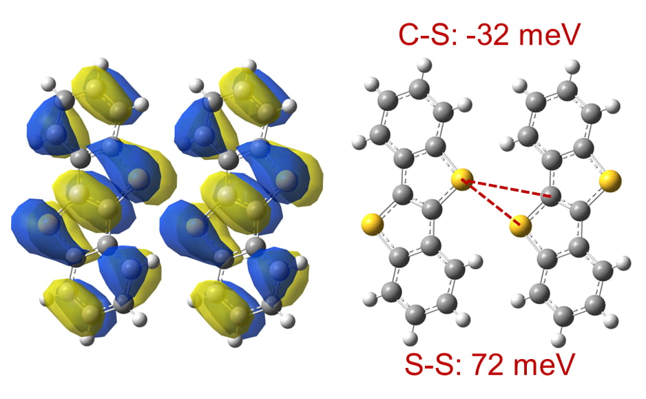
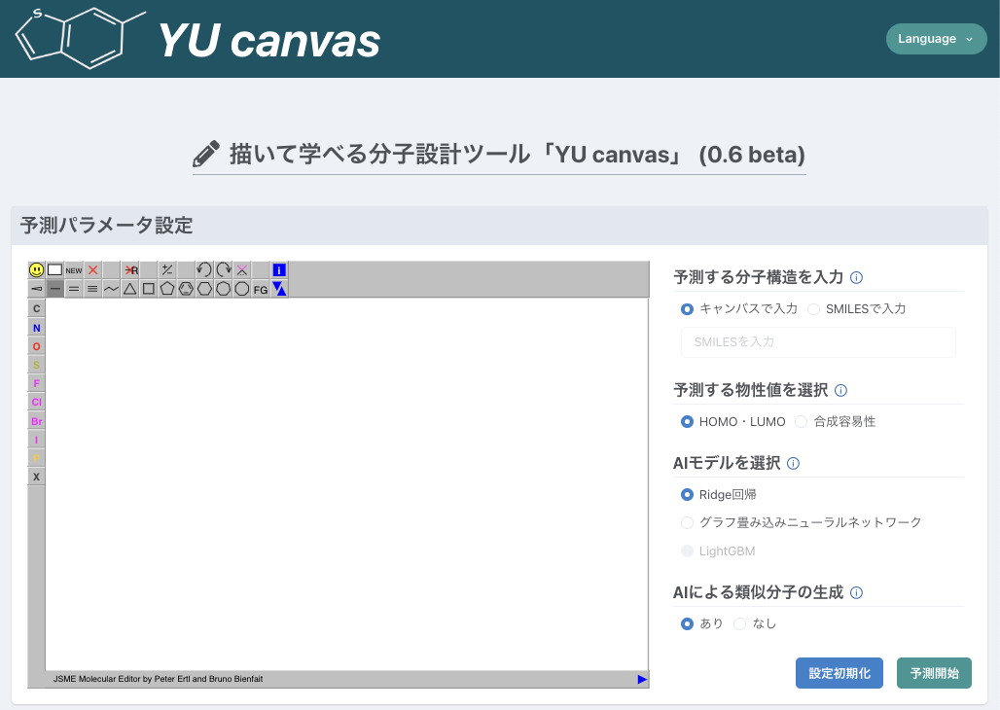

プロフィール
所属
山形大学大学院 有機材料システム研究科 有機材料システム専攻
松井研究室
博士前期 (修士) 課程 2年
松井研究室
博士前期 (修士) 課程 2年
学歴
| 期間 | 学校名 |
|---|---|
| 2023年4月 - 現在 | 山形大学 大学院 有機材料システム研究科 有機材料システム専攻 |
| 2019年4月 - 2023年3月 | 山形大学 工学部 システム創成工学科 |
経歴
| 期間 | 内容 |
|---|---|
| 2023年5月 - 2024年4月 |
MI-6株式会社 インターンシップ 分子構造生成モデルを活用した研究 |
受賞
| 受賞日 | 内容 |
|---|---|
| 2023年3月21日 | 山形大学 優秀学生賞 (学科50人程度の中から1名選出) |
論文 (査読あり)
-
Koki Ozawa, Tomoharu Okada, Hiroyuki Matsui, “Statistical analysis of interatomic transfer integrals for exploringhigh-mobility organic semiconductors”, Sci. Technol. Adv. Mater., 25, 2354652 (2024).
DOI: 10.1080/14686996.2024.2354652
国際学会・研究会 (査読なし)
-
Printed Wind Velocity Sensor Using Organic Semiconductors
◯ Seiga Shinmura, Ryouta Kobayashi, Koki Ozawa, Hiroyuki Matsui
The 7th Event of the Young Researchers Society for Flexible and Stretchable Electronics
May 23, 2024 -
Search for High Mobility π-Conjugated Cores Based on Interatomic Transfer Integrals
◯ Koki Ozawa, Tomoharu Okada, Hiroyuki Matsui
The 5th Event of the Young Researchers Society for Flexible and Stretchable Electronics
May 18, 2023
◯は発表者
国内学会・研究会 (査読なし)
-
有機半導体の結晶軸伸縮による高移動度結晶構造の探索
◯ 本間友, 岡田智悠, 尾沢昂輝, 松井弘之
日本コンピュータ化学会2024年秋季年会
2024年10月20日 -
高移動度有機半導体に向けた移動積分の大きい環状構造の探索
◯ 尾沢 昂輝, 岡田 智悠, 松井 弘之
第85回応用物理学会秋季学術講演会
2024年9月18日 -
塗布成膜可能な高性能有機半導体のバーチャルスクリーニング
◯ 尾沢 昂輝, 岡田 智悠, 松井 弘之
日本コンピュータ化学会2023年秋季年会 in 高松
2023年11月24日 -
高分子半導体を用いた印刷型温度センサの高安定化
◯ 新村 星河, 小林 亮太, 尾沢 昂輝, 松井 弘之
第70回応用物理学会春季学術講演会
2023年3月18日 -
原子間移動積分に基づく高移動度π共役コアの探索
◯ 尾沢 昂輝, 岡田 智悠, 松井 弘之
第83回応用物理学会秋季学術講演会
2022年9月20日 -
原子間移動積分に基づく高移動度π共役コアの探索
◯ 尾沢 昂輝, 岡田 智悠, 松井 弘之
第17回有機デバイス・物性院生研究会
2022年7月20日
◯は発表者
所属学会
| 期間 | 学会名 |
|---|---|
| 2023年9月 - 現在 | 日本コンピュータ化学会 学生会員 |
| 2022年6月 - 現在 | 応用物理学会 院生会員 |
作品


TA
| 期間 | 内容 |
|---|---|
| 2024年10月 - 2025年2月 | 物理化学演習Ⅱ TA |
| 2024年10月 - 2025年2月 | 物理化学Ⅱ TA |
| 2023年10月 - 2024年2月 | 物理化学演習Ⅱ TA |